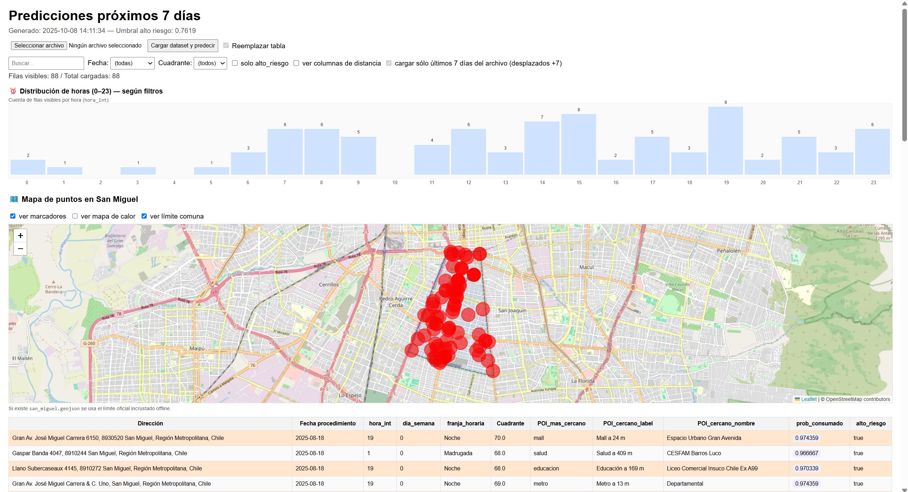

Analítica predictiva para focalizar patrullajes y prevenir delitos
SquadrIA es una plataforma que pronostica hotspots de delito por hora, tipo y zona, entregando tableros accionables para cuadrillas municipales. IA explicable, datos públicos + comunales, y despliegue portable (incluso offline) para decisiones en terreno.

¿Qué es SquadrIA?
SquadrIA es una plataforma que ayuda a municipalidades a focalizar patrullajes y prevenir delitos mediante analítica predictiva y visualizaciones fáciles de entender. Combina datos públicos y comunales para estimar dónde y cuándo pueden ocurrir incidentes, entregando información clara para planificar patrullajes de forma más eficiente.
Problema
Los recursos de patrullaje son limitados y muchas veces las decisiones se toman de forma reactiva, sin análisis preventivo ni priorización clara.
Solución
Sistema que anticipa los lugares con más probabilidad de delitos y recomienda dónde concentrar los patrullajes, entregando apoyo visual para la toma de decisiones.
Diferenciación
Funciona sin conexión a internet, puede exportar datos a Excel o HTML, y está diseñado para integrarse fácilmente a la gestión municipal.
Cómo funciona
Pipeline de datos
- Ingesta: registros históricos (STOP/municipal), POIs, calendario y contexto.
- Transformación: cálculo de horarios, estacionalidad y distancias a puntos clave.
- Modelado: entrenamiento de algoritmos que estiman la probabilidad de delitos por zona y franja horaria.
Para el usuario
- Mapa visual que muestra los sectores con mayor riesgo.
- Indicaciones simples sobre dónde y cuándo reforzar la vigilancia.
- Exportación de resultados y reportes listos para compartir.
Equipo
Video de presentación del equipo de SquadrIA.
Contacto
¿Quieres coordinar una reunión, solicitar una demo o proponer un piloto en tu comuna? Completa el formulario y te responderemos a la brevedad.